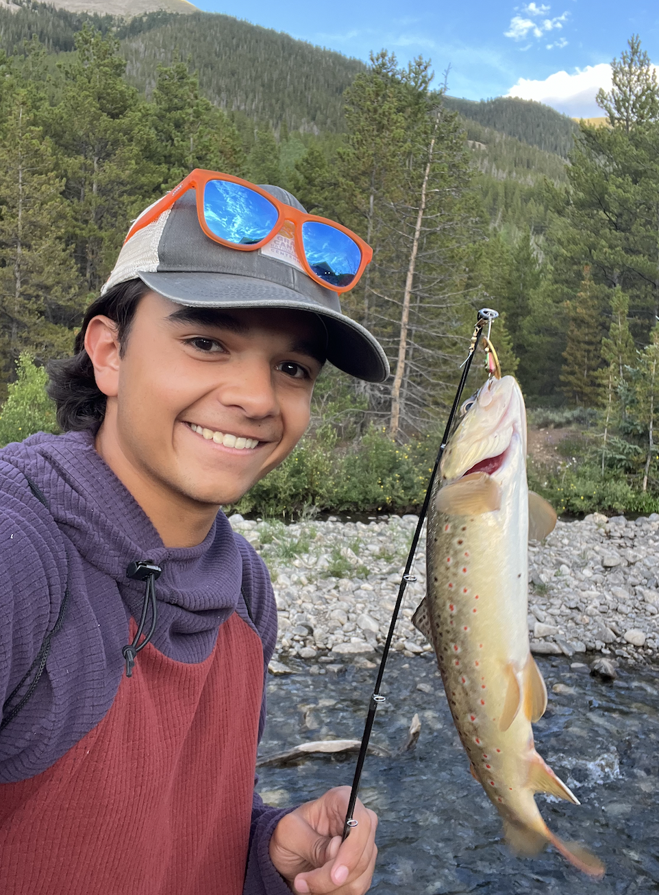

I'm currently a senior at Duke University studying electrical and computer engineering focusing on digital design and solid state devices.
I enjoy building systems from the ground up, including processors and an audio windowing system, and bringing those systems to life through implementation and debugging.
Recently, I designed and deployed a 32-bit pipelined processor on an FPGA to run a custom video game, combining low-level architecture, system design, and I/O handling.
Outside of technical work, I've led real engineering projects and teams, including coordinating construction efforts on the longest footbridge in Eswatini
and co-founding a hardware product startup.
I'm always looking for opportunities to build, learn, and work on challenging hardware problems.
